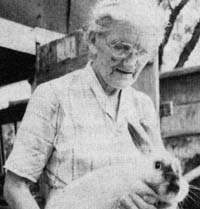
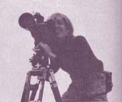

Profiles
Nature Student, Eva Atteberry, Douglas Miller, Filmmaker, and Henry and Jeff Craff; Concertina Makers
By the Mother Earth News editors
January/February 1978
In celebration of little-known MOTHER-type folks from all over.
NATURE STUDENT: EVA ATTEBERRY
If you've never seen a 16-pound rabbit, a blue (yes, blue!) bunny, a 15-foot-tall sunflower, or a kissing goose ... you obviously haven't visited Eva G. Atteberry's back yard in Salem, Illinois. Eva just seems to have a knack for growing things, and the 75-year-old "youngster" always has time to demonstrate the abundance that can be produced on only a small plot of land.
Ms. Atteberry is justifiably proud of the large "organic" garden she raises each year ... and which she keeps wild rabbits from eating by sprinkling "beef liver water" around the vegetables. Obviously, Eva believes that the natural way is best when it comes to plants.
Livestock, too, for that matter. Ms. Atteberry, for instance, doesn't set much store by the additive-laden chicken feeds that agribiz poultry producers currently stuff down their birds. "The chemicals make the eggs and the chickens fill up with water," she says ... then adds with a shrug, "I guess that's what people want nowadays."
Well, maybe that's what people who don't know any better want nowadays ... but Eva G. Atteberry definitely does know better. Which is why she feeds her baby chicks a hog starter that contains no chemicals at all ... but which her chickens thrive on nonetheless (are you listening, agribiz poultry producers?).
But to get back to those 16-pound rabbits and the blue bunny that so many folks stop in to see: Yep! Eva really has 'em right there in her back yard ... along with about 100 of their brothers, sisters, nephews, nieces, and cousins. "I used to sell a lot of rabbits to the grocery stores," Ms. Atteberry explains. "But now I mostly just breed my bunnies for color and size. This grayish-blue oneit looks about like a Siamese cat, doesn't it? took me a long time to develop."
A little further alongthrough the "goose fence"Eva bends over, hands clasped behind her back, so that one of the geese can approach and-on cuegive her a delicate peck on the cheek. Ms. Atteberry laughs a delighted laugh at her visitor's surprise, "People tell me they've never seen anything like it. "
Nor have a number of Eva's visitors ever heard of the comfrey that she grows and uses (by breaking a stem and rubbing the plant's sticky juice onto the injury or rash) to heal cuts, scratches, and poison ivy infections. But the comfrey is right there all right ... next to the tarragon, marjoram, chicory, catnip, lemon mint, and a wide variety of other herbs. "They all have their uses. The marjoram is a wonderful flavoring for hamburger, and I like to spice up vinegar with tarragon. You can make a very nice tea from the lemon mint, chicory substitutes for coffee, and we all know about catnip."
Ms. Atteberry, of course, grows many other herbs and plants (including delicious raspberries and that 15-foot-tall sunflower) in her back yard ... but you'll just have to drop by her place and see the miniature Garden of Eden for yourself. Don't visit, though, unless you expect to go away loaded down with plant starts, herb cuttings, valuable livestock and gardening lore, andmayberabbit or two. Eva is that kind of lady.
And although we know that Eva G. Atteberry has long forgotten more than the editors of this magazine will ever know about "homesteading" a back yard, it really warmed our hearts recently when Eva wrote us a note that began, "Dear MOTHER, I cannot do without you." Now that's a very gracious lady! Adapted from an article by Steve Korris in the Salem Times-Commoner.
DOUGLAS MILLER: FILMMAKER
One of the high points of the Second National Conference on Rural America recently held in Des Moines was a powerful 45-minute film entitled Farming is Farming: The Small Farm in America. This 16mm color and sound moviewhich won a silver medal at the Virgin Islands International Film Festival and has been selected for showing at New York City's Museum of Modern Artwas conceived, written, shot, and produced by Douglas Miller, an Ohio filmmaker who specializes in back-to-the-land documentaries.
According to Doug, the inspiration for the film came from his now-deceased grandfather: a farmer who taught agricultural engineering at Ohio State University. In fact, Doug's grandfather appears in the film several times ... giving his views on the efficiency and practicality of the small farm operation versus the ruinous methods of the capitaland energy- intensive, large-scale corporate farm.
The young, energetic moviemaker traveled widely and talked to small farmers from Iowa to Vermont to West Virginia in his attempt to "capture" these earthy folks and their struggle to produce crops on the land they live on and love.
Doug then intercut this footage with footage of rural activists and farm equipment manufacturers and salesmen. The-juxtaposition creates some dramatic scene changes and sharply brings into focus many of the reasons that some farmers succeed and others fail ... reasons such as the "bigger is better" myth and the high cost of a mechanized farming operation.
Doug's solution to today's outrageous costs of farming becomes obvious: smaller parcels of land worked with horses ... that's right, "real" horsepower! When the creative filmmaker pits the snort and snuffle and jingling harnesses of workhorses against the roar and belching smoke of tractors, he makes a telling point!
Doug Miller's film can be rented for $45 or bought for $450 from Ram Films, 200 Lovers Lane, Steubenville, Ohio 43952. "If we can ever make our money back, we hope to do more documentaries about food and rural issues," Doug says. Earning back that money may take a while, butif Farming is Farming is any indicationDouglas Miller's next documentary will be worth waiting for! Kennedy P. Maize.
HENRY AND JEFF CRABB: CONCERTINA MAKERS
Henry and Jeff Crabbof London, Englandare undoubtedly the finest custom concertina makers in the world And not just because they're the only made-to-order concertina makers left on the face of the planet either. The surname "Crabb" has been associated with the very best in handmade musical instruments ever since one of Henry's and Jeff's forebearsthe "original" Henry Crabbopened a London shop two centuries ago.
It takes some 200 hours for the boys to put together one of their musical instruments. Why so long? Because each and every partright down to the smallest nut and boltin each and every Crabb concertina is fabricated right in the Crabb shop. Not a single fragment of a single squeeze-box is mass produced.
"Everything is made in this shop by hand," says Henry, "because that's the way to make the finest instruments in the world ... which we do. And that's' why we're the only people left in this business. Others found it too difficult to compete with us when it came to overall quality. "
The Crabbs can also boast (honestly, which means it's not a boast ... just a statement of fact) of constructing both the world's largest and smallest concertinas (which were exactly the same, exceptof coursefor their size).
Neither Jeff nor Henry make a practice of boasting too loudly, however: "We like to keep the business quiet," they say, "because if too many people found out about us, we'd have so much work that we'd never be able to complete it. Since our father retired last year, we're the only custom concertina makers left. And young people don't want to learn our craft these days. So, when we retire, that will be the end. In the meantime, we already have more work than we can handle.
And who buys a concertina in the 1970's? "You never know who'll walk through the door next ... a pop singer, film star, musician, or just an ordinary bloke. It always amazes us that the demand for the instruments remains as strong as it does at the prices we now have to charge. But it seems that someone always wants a concertina, no matter what it costs. "
And a Crabb concertina does carry a hefty price tag these days. Anywhere from £ 500 to £ 2,000 (roughly $900 to $2,600 U.S.) ... and, at that, there's a long waiting list for Henry and Jeff's work. "We just completed an order for a woman in New York. She was delighted to pay L800 for her box ... and wait three years to get it. "
If you're willing to wait that long and pay that much for one of the Crabbs' custom-made concertinas, you won't really have as much trouble as you might think placing your order. Henry and Jeff (and Crabbs who've gone before) have made and repaired squeeze-boxes for customers in virtually every country in world. And their work is so well known that a letter simply addressed "Concertina Makers, London" is almost always delivered right to their door by post office. Arturo F. Gonzalez, Jr.
Know someone whether sung or unsungwho's doing something of merit in wholistic gardening, alternative, environmental conservation, self-employment recent home construction, or any of the other fields of endeavor featured in MOTHER? A fact-filled, 450- to 500-essay that describes that person, accompanied by a glossy, black-and-white photo, will-upon being for we in PROFILES earn you a fast, flat to. PROFILES Editor, THE MOTHER EARTH P.O. Box 70, Hendersonville, N.C. 28739.
|
 |
 |
 |